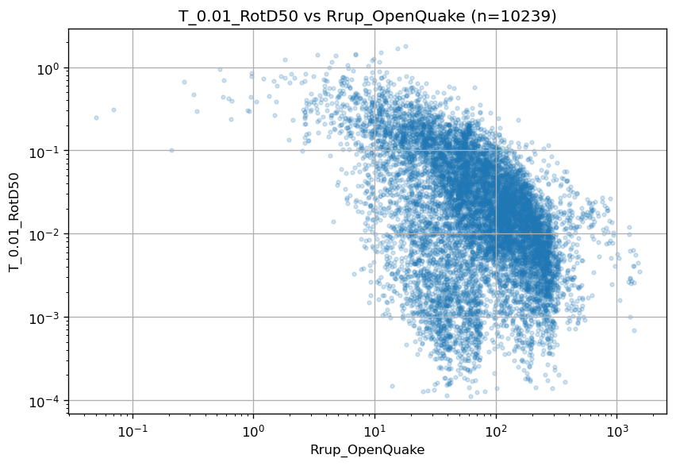
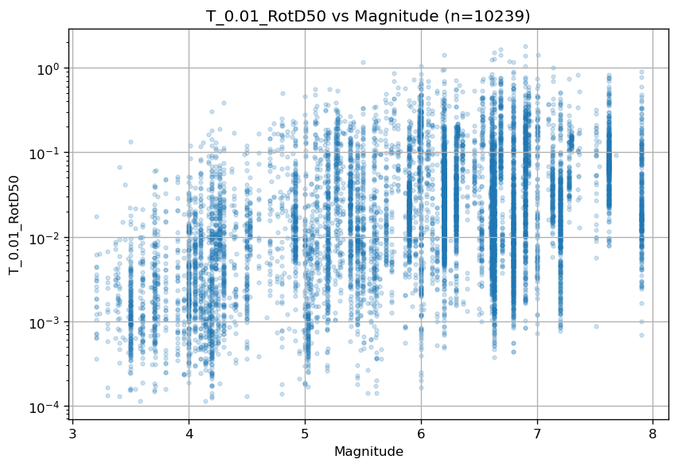
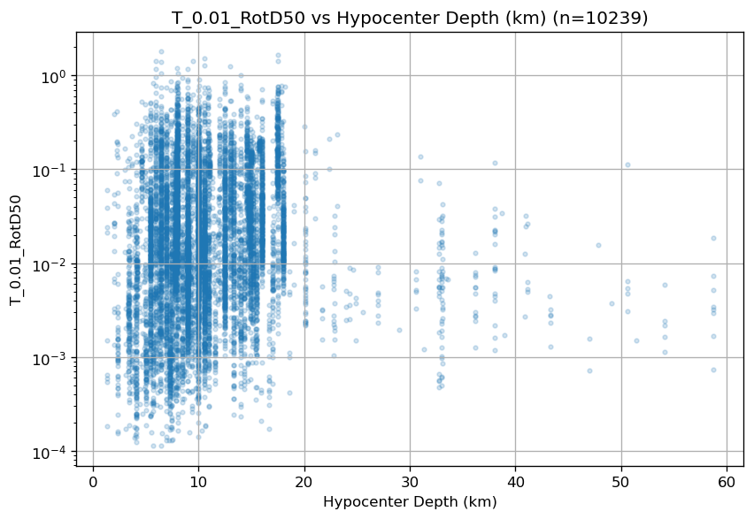
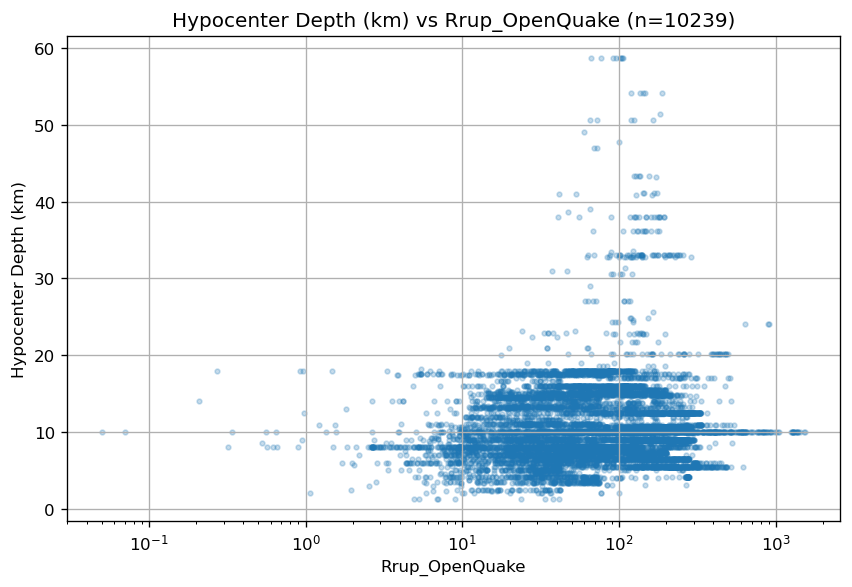
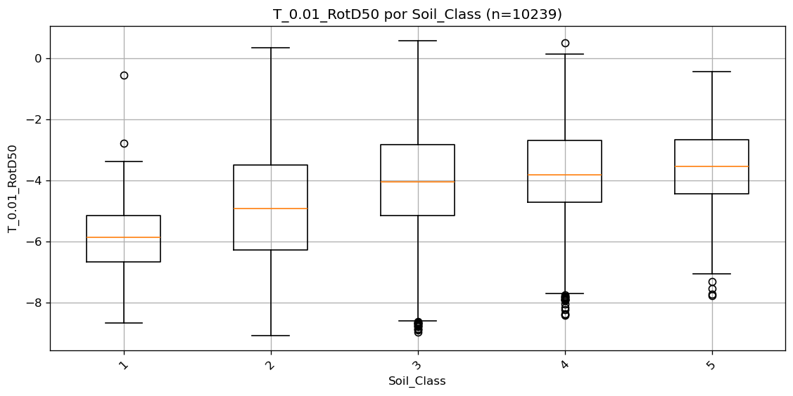
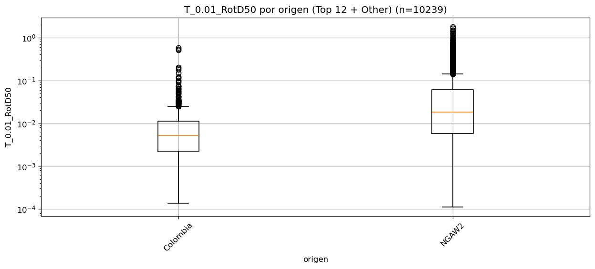
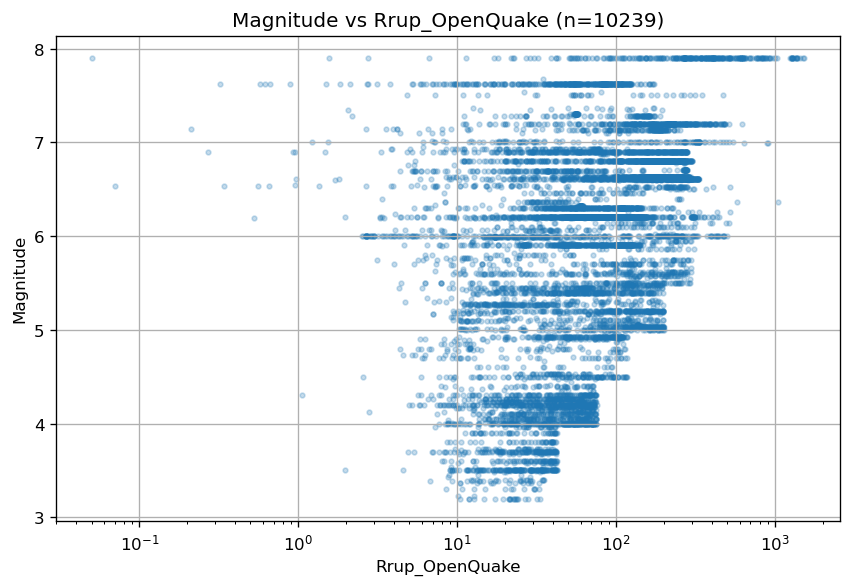
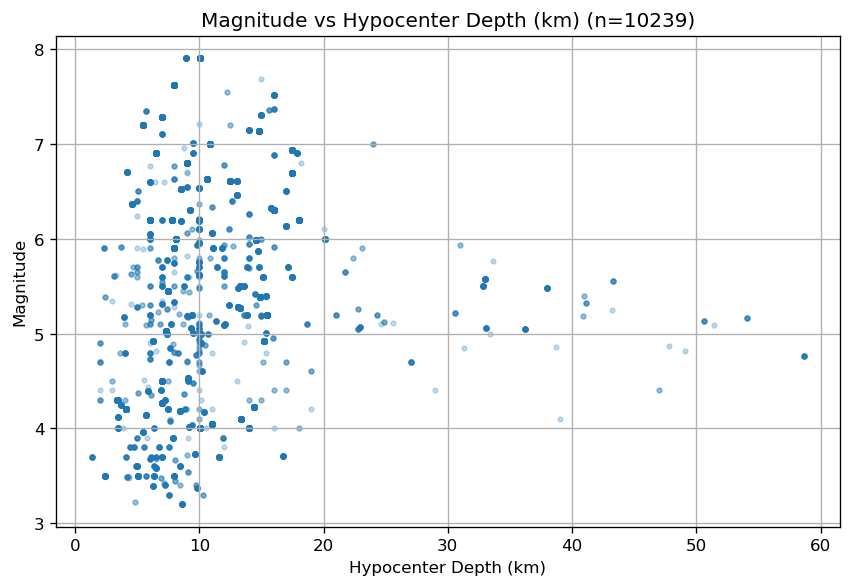

Análisis exploratorio de datos - Espectro de respuesta (Ing. Sísmica)#
import numpy as np
import pandas as pd
import matplotlib.pyplot as plt
import seaborn as sns
import plotly.express as px
df = pd.read_csv(r'C:\Users\elias\OneDrive\Desktop\dataviz_py\eda-jbook\docs\NGACOL.csv')
inputs = df.drop('T_0.01_RotD50', axis=1)
output = df['T_0.01_RotD50']
Análisis bivariado#
T_0.01_RotD50 vs Rrup_OpenQuake#
xcol = "Rrup_OpenQuake"
ycol = "T_0.01_RotD50"
d = df[[xcol, ycol]].copy()
d[xcol] = np.exp(pd.to_numeric(d[xcol], errors="coerce"))
d[ycol] = np.exp(pd.to_numeric(d[ycol], errors="coerce"))
d = d.dropna()
if len(d) > 80000:
d = d.sample(80000, random_state=42)
plt.figure(figsize=(7.2, 5.0), dpi=120)
plt.scatter(d[xcol], d[ycol], s=8, alpha=0.20)
plt.title(f"{ycol} vs {xcol} (n={len(d)})")
plt.xlabel(xcol)
plt.ylabel(ycol)
plt.xscale("log")
plt.yscale("log")
plt.grid(True)
plt.tight_layout()
plt.show()

La famosa curva de atenuación indica que a medida que la distancia de ruptura aumenta, la aceleración disminuirá. Es notoria la manera no lineal en la que disminuye la aceleración frente a la ruptura en la escala log-log
T_0.01_RotD50 vs Magnitude#
xcol = "Magnitude"
ycol = "T_0.01_RotD50"
d = df[[xcol, ycol]].copy()
d[xcol] = pd.to_numeric(d[xcol], errors="coerce")
d[ycol] = pd.to_numeric(np.exp(d[ycol]), errors="coerce")
d = d.dropna()
if len(d) > 80000:
d = d.sample(80000, random_state=42)
plt.figure(figsize=(7.2, 5.0), dpi=120)
plt.scatter(d[xcol], d[ycol], s=8, alpha=0.20)
plt.title(f"{ycol} vs {xcol} (n={len(d)})")
plt.xlabel(xcol)
plt.ylabel(ycol)
plt.yscale("log")
plt.grid(True)
plt.tight_layout()
plt.show()

Se ve una tendencia positiva clara, a mayor magnitud, T_0.01_RotD50 tiende a aumentar .La nube tiene mucha dispersión vertical para una misma magnitud por lo que la Magnitude explica parte importante, pero no basta (distancia, sitio y otros factores están metiendo variabilidad). Las lineas verticales sugieren magnitudes redondeadas
Hypocenter Depth vs T_0.01_RotD50#
xcol = "Hypocenter Depth (km)"
ycol = "T_0.01_RotD50"
d = df[[xcol, ycol]].copy()
d[xcol] = pd.to_numeric(d[xcol], errors="coerce")
d[ycol] = pd.to_numeric(np.exp(d[ycol]), errors="coerce")
d = d.dropna()
if len(d) > 80000:
d = d.sample(80000, random_state=42)
plt.figure(figsize=(7.2, 5.0), dpi=120)
plt.scatter(d[xcol], d[ycol], s=8, alpha=0.20)
plt.title(f"{ycol} vs {xcol} (n={len(d)})")
plt.xlabel(xcol)
plt.ylabel(ycol)
plt.yscale("log")
plt.grid(True)
plt.tight_layout()
plt.show()

La densidad está casi toda entre 0 y 20 km. Para >30 km hay muy pocos puntos. No se aprecia una relación fuerte monotónica con profundidad en el rango dominante (0–20 km).
Hypocenter Depth vs Rrup_OpenQuake#
ycol = "Hypocenter Depth (km)"
xcol = "Rrup_OpenQuake"
d = df[[xcol, ycol]].copy()
d[xcol] = np.exp(pd.to_numeric(d[xcol], errors="coerce"))
d[ycol] = pd.to_numeric(d[ycol], errors="coerce")
d = d.dropna()
plt.figure(figsize=(7.2, 5.0), dpi=120)
plt.scatter(d[xcol], d[ycol], s=8, alpha=0.25)
plt.title(f"{ycol} vs {xcol} (n={len(d)})")
plt.xlabel(xcol)
plt.ylabel(ycol)
plt.xscale("log")
plt.grid(True)
plt.tight_layout()
plt.show()

La mayoría de registros, Rrup 10–200 km y profundidades 5–15 km.No se ve una relación simple, más bien refleja la composición del dataset. Los eventos más profundos (30–60 km) aparecen, pero son minoría y no dominan ninguna banda clara de distancias
T_0.01_RotD50 vs Soil_Class#
cat = "Soil_Class"
val = "T_0.01_RotD50"
d = df[[cat, val]].copy()
d[cat] = d[cat].astype("string")
d[val] = pd.to_numeric(d[val], errors="coerce")
d = d.dropna()
# ordenar clases por mediana
order = d.groupby(cat)[val].median().sort_values().index.tolist()
data = [d.loc[d[cat] == k, val].values for k in order]
plt.figure(figsize=(9.5, 4.8), dpi=120)
plt.boxplot(data, tick_labels=[str(k) for k in order], showfliers=True)
plt.title(f"{val} por {cat} (n={len(d)})")
plt.xlabel(cat)
plt.ylabel(val)
plt.xticks(rotation=45)
plt.grid(True)
plt.tight_layout()
plt.show()

Hay un cambio entre clases ya que, las medianas y los rangos intercuartílicos no son iguales. Se observa diferencia de dispersión entre clases. Algunas clases tienen más outliers. Soil_Class está asociado no solo al nivel típico de T_0.01_RotD50, sino también a su variabilidad.
T_0.01_RotD50 vs Origen#
cat = "origen"
val = "T_0.01_RotD50"
top_k = 12
d = df[[cat, val]].copy()
d[cat] = d[cat].astype("string")
d[val] = np.exp(pd.to_numeric(d[val], errors="coerce"))
d = d.dropna()
top = d[cat].value_counts().head(top_k).index
d.loc[~d[cat].isin(top), cat] = "Other"
order = d.groupby(cat)[val].median().sort_values().index.tolist()
data = [d.loc[d[cat] == k, val].values for k in order]
plt.figure(figsize=(10.5, 4.8), dpi=120)
plt.boxplot(data, tick_labels=[str(k) for k in order], showfliers=True)
plt.title(f"{val} por {cat} (Top {top_k} + Other) (n={len(d)})")
plt.xlabel(cat)
plt.ylabel(val)
plt.xticks(rotation=45)
plt.yscale("log")
plt.grid(True)
plt.tight_layout()
plt.show()

Las distribuciones son distintas. NGAW2 muestra mediana mayor y también más variabilidad/outliers en amplitudes altas.Colombia está desplazado hacia valores más bajos. Con esto se concluye que el origen es una fuente de heterogeneidad.
Magnitude vs Rrup_OpenQuake#
ycol = "Magnitude"
xcol = "Rrup_OpenQuake"
d = df[[xcol, ycol]].copy()
d[xcol] = pd.to_numeric(np.exp(d[xcol]), errors="coerce")
d[ycol] = pd.to_numeric(d[ycol], errors="coerce")
d = d.dropna()
plt.figure(figsize=(7.2, 5.0), dpi=120)
plt.scatter(d[xcol], d[ycol], s=8, alpha=0.25)
plt.title(f"{ycol} vs {xcol} (n={len(d)})")
plt.xlabel(xcol)
plt.ylabel(ycol)
plt.xscale("log")
plt.grid(True)
plt.tight_layout()
plt.show()

Se puede evidenciar una forma de escalera que va subiendo por la derecha. Esto se da gracias al filtrado inicial antes de recibir el dataset que usa la distancia hipocentral y la magnitud por bines de 0.5.
Magnitude vs Hypocenter Depth#
ycol = "Magnitude"
xcol = "Hypocenter Depth (km)"
d = df[[xcol, ycol]].copy()
d[xcol] = pd.to_numeric(d[xcol], errors="coerce")
d[ycol] = pd.to_numeric(d[ycol], errors="coerce")
d = d.dropna()
plt.figure(figsize=(7.2, 5.0), dpi=120)
plt.scatter(d[xcol], d[ycol], s=8, alpha=0.25)
plt.title(f"{ycol} vs {xcol} (n={len(d)})")
plt.xlabel(xcol)
plt.ylabel(ycol)
plt.grid(True)
plt.tight_layout()
plt.show()

No se ve una relación fuerte entre magnitud y profundidad en el grueso de datos: magnitudes 3.5–8 aparecen mayoritariamente a profundidades 5–15 km. Los profundos (>30 km) son pocos y no muestran un patrón claro de magnitudes extremas pareciendo outliers
Mapa global de calor usando la clasificación Soil_Class#
d = df[["Station Latitude", "Station Longitude", "Soil_Class"]].copy()
d["Station Latitude"] = pd.to_numeric(d["Station Latitude"], errors="coerce")
d["Station Longitude"] = pd.to_numeric(d["Station Longitude"], errors="coerce")
d = d.dropna()
fig = px.scatter_geo(
d,
lat="Station Latitude",
lon="Station Longitude",
color="Soil_Class",
projection="natural earth",
title=f"Estaciones — Mapa global por Soil_Class (n={len(d)})",
)
fig.update_traces(marker=dict(size=4, opacity=0.6))
fig.update_layout(height=520, legend_title_text="Soil_Class")
fig.show()
Mapa de calor de eventos usando magnitud del evento#
d = df[["Seismic Latitude", "Seismic Longitude", "Magnitude"]].copy()
d["Seismic Latitude"] = pd.to_numeric(d["Seismic Latitude"], errors="coerce")
d["Seismic Longitude"] = pd.to_numeric(d["Seismic Longitude"], errors="coerce")
d["Magnitude"] = pd.to_numeric(d["Magnitude"], errors="coerce")
d = d.dropna()
fig = px.density_map(
d,
lat="Seismic Latitude",
lon="Seismic Longitude",
z="Magnitude",
radius=6,
zoom=1,
center=dict(lat=0, lon=0),
title=f"Mapa de calor ponderado por Magnitude — Eventos (n={len(d)})",
map_style="carto-positron"
)
fig.update_layout(height=600)
fig.show()
Tablas de contingencia para variables categóricas#
from scipy.stats import chi2_contingency
d = df[["origen", "Soil_Class"]].copy()
d["origen"] = d["origen"].astype("string").fillna("NA")
d["Soil_Class"] = d["Soil_Class"].astype("string").fillna("NA")
ct = pd.crosstab(d["origen"], d["Soil_Class"], dropna=False)
print(ct)
Soil_Class 1 2 3 4 5
origen
Colombia 110 132 173 78 44
NGAW2 0 1439 5880 1988 395
Se puede evidenciar que para la clase 1, no existen registros por fuera de los colombianos. Para ambos grupos, la clase 3 sigue siendo la que mas cantidad de datos posee, siguiéndole la clase 3 y 4.
# Chi-cuadrado de independencia
chi2, p, dof, expected = chi2_contingency(ct.values)
n = ct.values.sum()
r, c = ct.shape
cramers_v = np.sqrt(chi2 / (n * (min(r - 1, c - 1)))) if min(r - 1, c - 1) > 0 else np.nan
summary = pd.DataFrame([{
"n": int(n),
"chi2": float(chi2),
"dof": int(dof),
"p_value": float(p),
"cramers_v": float(cramers_v)
}])
print(summary)
n chi2 dof p_value cramers_v
0 10239 2117.409991 4 0.0 0.454751
Con la X2 se rechaza independencia, origen y Soil_Class están fuertemente asociados. La distribución de clases de suelo no es la misma en Colombia y en NGAW2.
Para cuantificar qué tan fuerte es esa asociación se usa Cramér, que es un tamaño de efecto para tablas de contingencia (de 0 a 1). Aquí V=0.455, lo que implica una asociación moderada por lo que la diferencia entre orígenes es significativa.
Contingencia en porcentajes#
d = df[["origen", "Soil_Class"]].copy()
d["origen"] = d["origen"].astype("string").fillna("NA")
d["Soil_Class"] = d["Soil_Class"].astype("string").fillna("NA")
ct = pd.crosstab(d["origen"], d["Soil_Class"], dropna=False)
row_pct = (ct.div(ct.sum(axis=1), axis=0) * 100).round(2) # % por fila
col_pct = (ct.div(ct.sum(axis=0), axis=1) * 100).round(2) # % por columna
print("% por fila (distribución de Soil_Class dentro de cada origen)")
print(row_pct)
% por fila (distribución de Soil_Class dentro de cada origen)
Soil_Class 1 2 3 4 5
origen
Colombia 20.48 24.58 32.22 14.53 8.19
NGAW2 0.00 14.83 60.61 20.49 4.07
print("% por columna (distribución de origen dentro de cada Soil_Class)")
print(col_pct)
% por columna (distribución de origen dentro de cada Soil_Class)
Soil_Class 1 2 3 4 5
origen
Colombia 100.0 8.4 2.86 3.78 10.02
NGAW2 0.0 91.6 97.14 96.22 89.98
Test de levene para varianzas#
from scipy.stats import levene
cat = "Soil_Class"
val = "T_0.01_RotD50"
d = df[[cat, val]].copy()
d[cat] = d[cat].astype("string").fillna("NA")
d[val] = pd.to_numeric(d[val], errors="coerce")
d = d.dropna(subset=[val])
groups = [g[val].values for _, g in d.groupby(cat) if len(g) >= 5]
W, p = levene(*groups, center="median")
print(f"Levene (center=median): varianza de {val} por {cat}")
print("W =", float(W), "p_value =", float(p))
Levene (center=median): varianza de T_0.01_RotD50 por Soil_Class
W = 31.791922495960808 p_value = 2.2955644481516956e-26
Aplicando la prueba de Levene para comparar varianzas de T_0.01_RotD50 entre categorías de Soil_Class, se obtuvo p=2.30×10⁻²⁶, indicando varianzas distintas entre clases al rechazar la hipotesis nula.